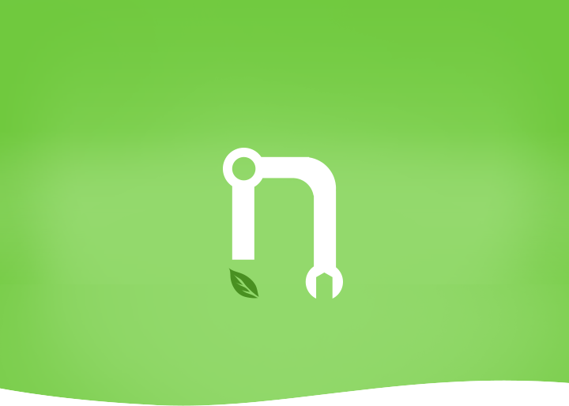

<!DOCTYPE html>
<html>

	<head>
		<meta charset="utf-8">
		<title>农事助手</title>
		<meta name="viewport" content="width=device-width, initial-scale=1,maximum-scale=1,user-scalable=no">
		<meta name="apple-mobile-web-app-capable" content="yes">
		<meta name="apple-mobile-web-app-status-bar-style" content="black">

		<link rel="stylesheet" href="libs/css/mui.min.css">
		<link rel="stylesheet" href="css/comm.css">
		<style type="text/css">
			body {
				background: #fff;
			}
			.logo-warpper {
				width: 100%;
				background: #fff;
			}
			.mui-input-group {
				padding: 20px;
			}
			.mui-input-group .mui-input-row {
				height: 50px;
				line-height: 50px;
				padding-left: 30px;
			}
			.mui-input-row .mui-input-password~.mui-icon-eye {
				top: 15px;
			}
			/*下边线从最左边开始*/
			
			.mui-input-group .mui-input-row:after {
				left: 0;
			}
			.mui-input-group:after,
			.mui-input-group:before {
				background: #fff;
			}
			.usericon {
				background: url(images/login_icon_user.png) no-repeat 0 center;
				background-size: 24px 28px;
			}
			.pwdicon {
				background: url(images/login_icon_password.png) no-repeat 0 center;
				background-size: 24px 28px;
			}
			.login-btn {
				width: 100%;
				height: 50px;
				background: #70ca3e;
				color: #fff;
				border-radius: 25px;
				margin-top: 50px;
				border: 1px solid #70ca3e;
				font-size: 18px;
			}
		</style>
	</head>

	<body>
		<div id="app"></div>
		<script type="text/x-template" id="indexTpl">
			<div>
				<header class="mui-bar mui-bar-nav"></header>
				<div class="mui-content">
					<div class="logo-warpper">
						
					</div>
					<form class="mui-input-group">
						<div class="mui-input-row usericon">
							<input type="text" class="mui-input-clear" v-model="username" placeholder="请输入用户名">
						</div>
						<div class="mui-input-row pwdicon">
							<input type="password" v-model="password" placeholder="请输入密码">
						</div>
						<button type="button" class="mui-btn login-btn" @tap="loginSubmit()">登录</button>
					</form>
				</div>
			</div>
		</script>

	</body>
	<script src="libs/js/mui.min.js"></script>
	<script src="libs/js/vue.min.js"></script>
	<script src="js/comm.js"></script>

	<script>
		var _toast = false;   

		mui.back = function() {
			if(!_toast || !_toast.isVisible()) {
				_toast = mui.toast('再按一次返回键退出', {
					duration: 'long',
					type: 'div'
				});
			} else {
				plus.runtime.quit();
			}
		}

		var nwaiting = null;
		var vm = new Vue({
			el: '#app',
			template: indexTpl,
			data: function() {
				return {
					username: null,
					password: null,
					main_loaded_flag: false,
					mainPage: null,
				}
			},
			mounted: function() {
				var vm = this;
			},
			methods: {
				toMain: function() {
					//使用定时器的原因：
					//可能执行太快，main页面loaded事件尚未触发就执行自定义事件，此时必然会失败
					var vm = this;
					vm.mainPage = plus.webview.getWebviewById("index");
					if(!vm.mainPage) {
						vm.mainPage = mui.preload({
							id: 'index',
							url: 'index.html'
						});
					} else {
						vm.main_loaded_flag = true;
					}
					vm.mainPage.addEventListener("loaded", function() {
						setTimeout(function() {
							vm.main_loaded_flag = true;
						}, 800)
					});
					var id = setInterval(function() {
						if(vm.main_loaded_flag) {
							clearInterval(id);
							nwaiting.close();
							mui.fire(vm.mainPage, 'show', null);
							vm.mainPage.show("slide-in-right");
						}
					}, 20);
				},
				loginSubmit: function() {
					var vm = this;
					if(this.username == null || this.password == null) {
						mui.toast('请输入用户名或密码');
						return;
					}
					if(this.username.replace(/(^\s*)|(\s*$)/g, "") == '' || this.password.replace(/(^\s*)|(\s*$)/g, "") == '') {
						mui.toast('请输入用户名或密码');
						return;
					}
					var param = {
						username: this.username,
						password: this.password
					}
					nwaiting = plus.nativeUI.showWaiting('登录中...');
					mui.ajax(LOGINURL + 'login/', {
						data: param,
						type: 'POST',
						timeout: 10000,
						headers: {
							'source': 'mobile'
						},
						success: function(d) {
							if(d && d.state === 0) {
								var loginUserInfo = d.aaData;
								loginUserInfo.password = param.password;
								// 保存用户登录信息
								localStorage.setItem('loginUserInfo', JSON.stringify(loginUserInfo));

								vm.toMain();
							} else {
								nwaiting.close()
								mui.alert(d.msg);
							}
						},
						error: function(xhr, type, errorThrown) {
							//异常处理；
							if(nwaiting) {
								nwaiting.close();
							}
							console.log(type)
							mui.toast('接口请求失败');
						}
					})
				}
			}
		});
	</script>

</html>